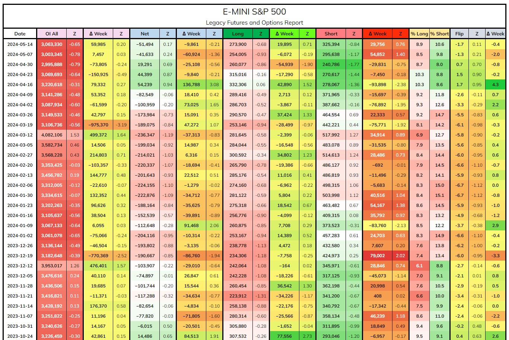

CFTC CoT Report Viewer
R, Shiny, gt, tidyverse, data.table
Application:
This Shiny application provides an interactive way to view the weekly Commitments of Traders (CoT) published by the Commodity Futures Trading Commission (CFTC). Users can select different markets, along with a date range, to explore historical and most recent CoT data. The application displays this information in an easy-to-read table, enhanced by color coding and detailed descriptions of each data column.
Process:
Aggregated data from CFTC reports, cleaned and preprocessed it using reproducible R scripts. Created dynamic report tables with the gt package and integrated them into a Shiny app for enhanced interactivity. Overcame challenges related to the gt package’s newness by thoroughly studying its documentation.
Installation
To run this application locally, follow these steps:
- Install R from the Comprehensive R Archive Network (CRAN).
- Install necessary R packages. Run the following commands in your R console:
R # this starts interactive R shell
required_packages <- c("tidyverse", "readxl", "data.table", "vroom", "gt", "shiny")
install.packages(required_packages)
q() # exits R shell
Currently supports R 4.3.3
Running the App
Clone the repository and run the app through your terminal after installing the above requirements.
From Terminal
git clone https://github.com/modest-melody/CoT-Report-Viewer.git
cd CoT-Report-Viewer/Legacy-NonCom
R -e "shiny::runApp('non_commercial_app.R')"
Bring the server and port # to your browser.
View Project on GitHub